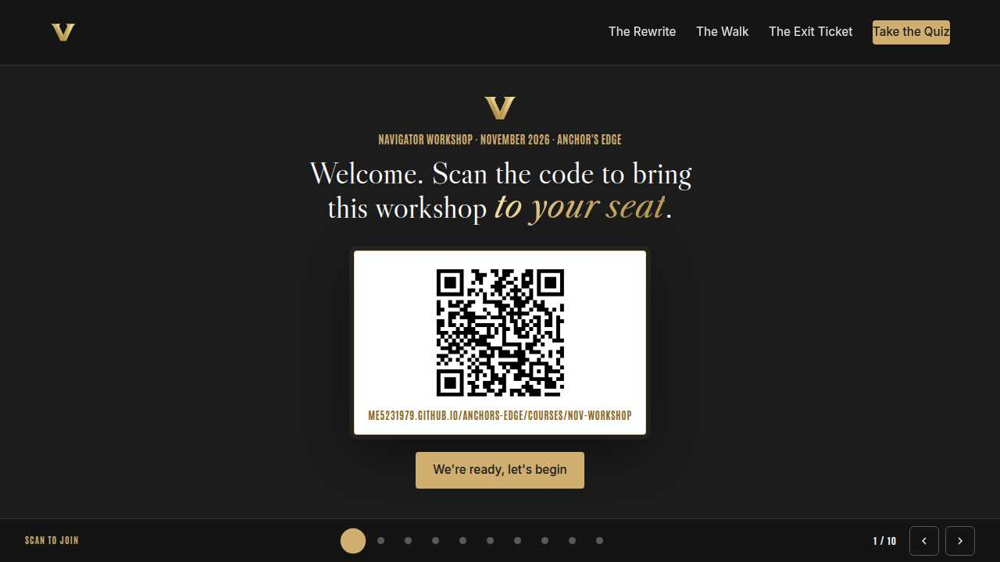
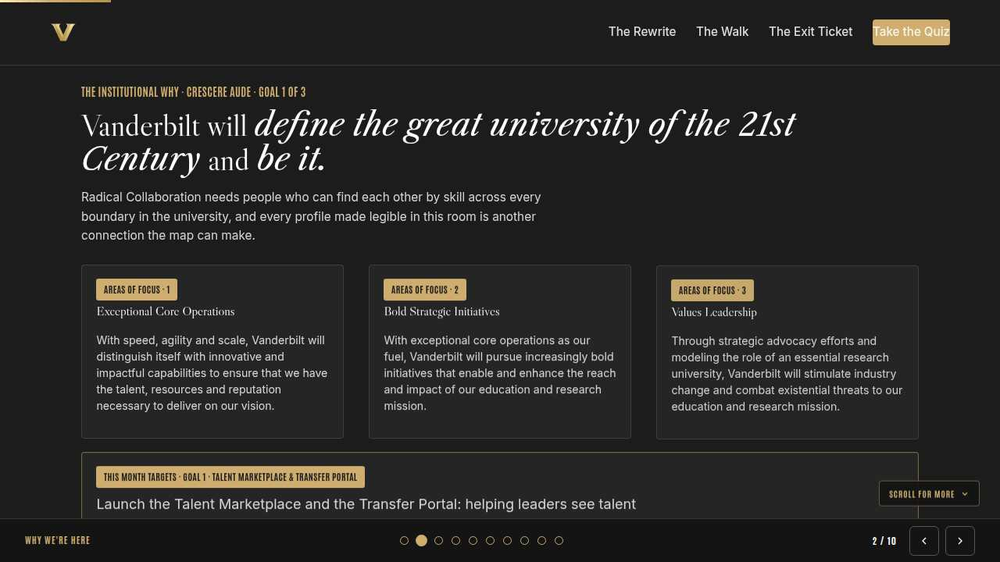
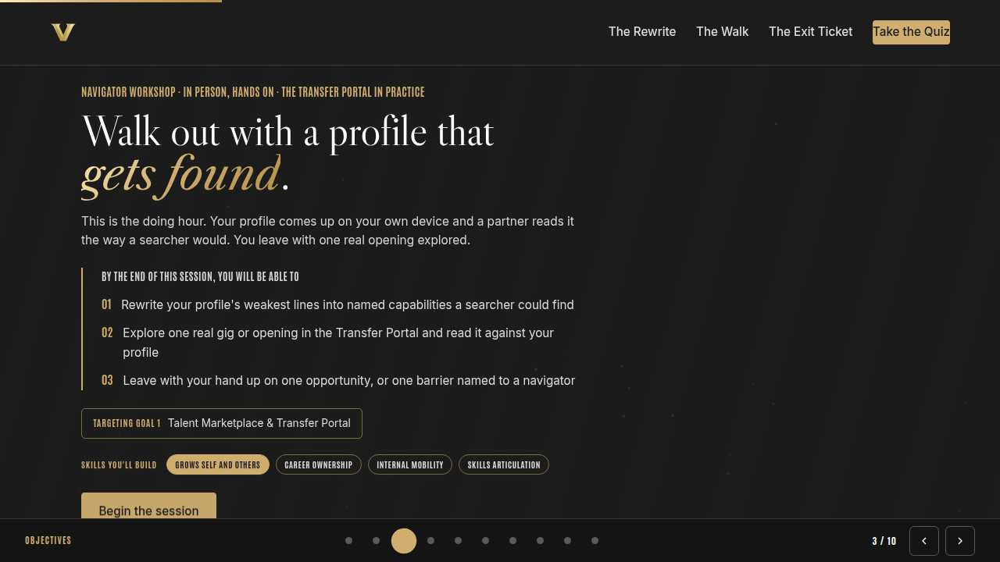
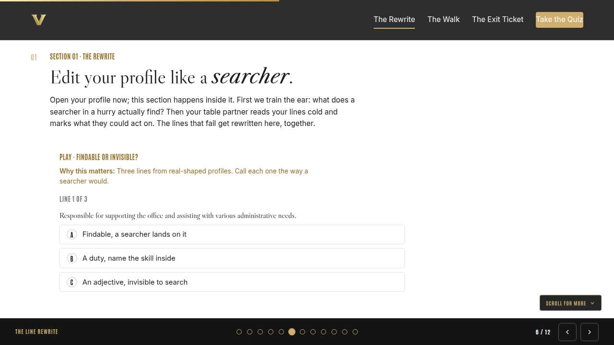
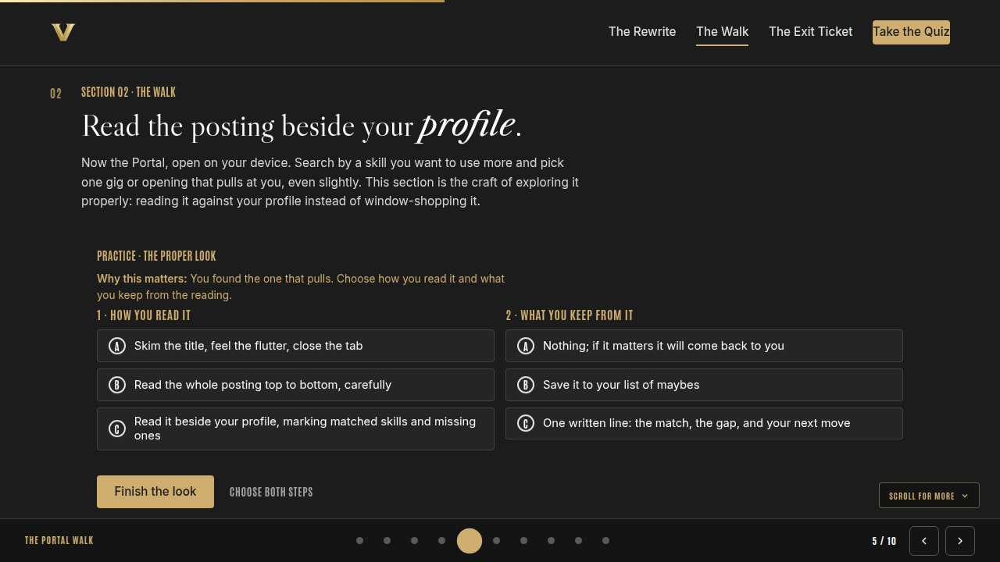
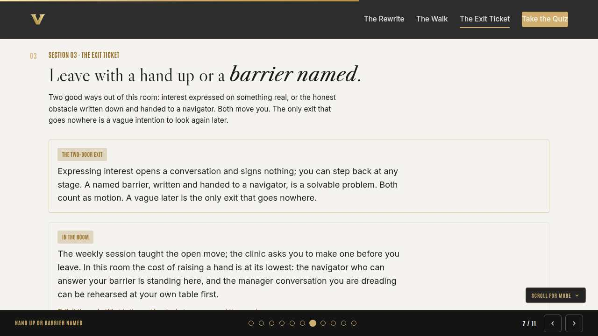
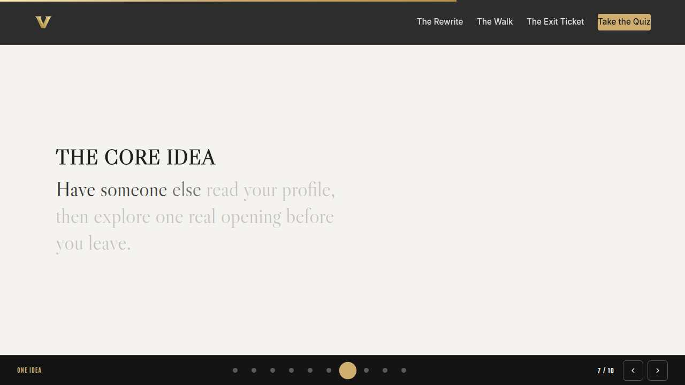
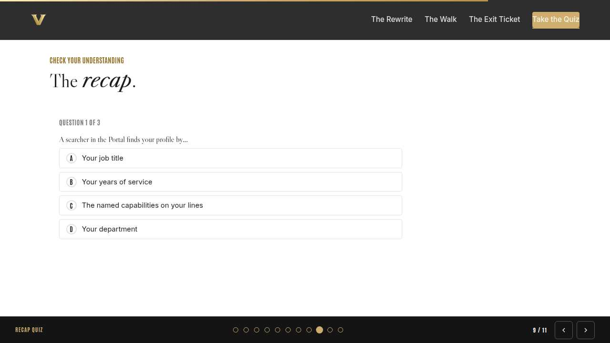
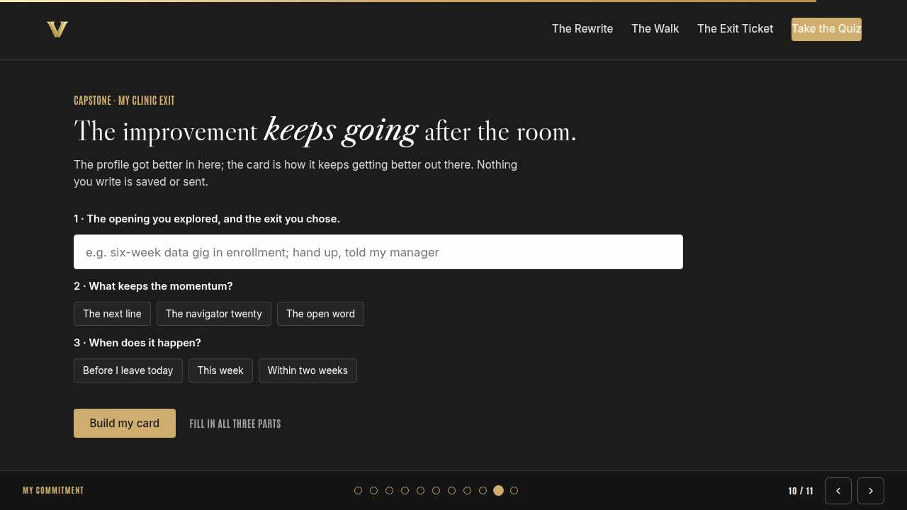
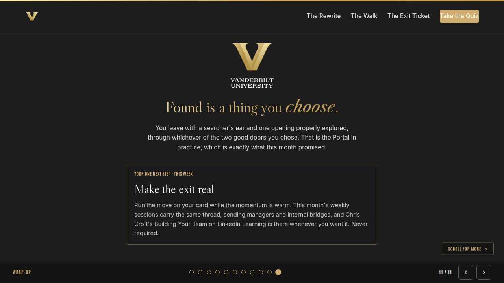

Vanderbilt · Anchor's Edge · ATD facilitator guide · print edition
The Profile Clinic, the facilitator guide

Run of show
| Screen | Full (min) | Core (min) |
|---|---|---|
| Welcome / QR | 3 | 2 |
| Why we're here | 4 | 2 |
| Objectives | 3 | 2 |
| The line rewrite | 9 | 6 |
| The Portal walk | 11 | 8 |
| Hand up or barrier named | 9 | 6 |
| The core idea | 2 | 1 |
| Recap quiz | 5 | 4 |
| Capstone commitment | 6 | 3 |
| Closing | 2 | 2 |
| Total | 54 | 36 |
The goal this month serves
Goal 1, Talent Marketplace & Transfer Portal.
Audience
All Vanderbilt staff, in person with their navigator; nobody is assumed to manage anyone. Works for 10 to 40 at tables of 4 to 6, everyone on their own device with Portal access. Best after the month's Tuesday session, and it stands alone.
Room setup
In person, navigator led: projector plus presenter device, tables that pair easily, learners on their own devices via the welcome-slide QR. Nothing typed into the deck is saved or sent.
Materials
- Meeting platform with screen share and breakout rooms; deck link ready to paste in chat
- Facilitator machine with the facilitator edition open; notifications off
- Learners on their own devices with the learner link
- Chat open for share-outs; the capstone copy button pastes there cleanly
A week before
- Run the learner edition start to finish and do every interaction honestly; you will demo at least one live.
- Read this month's theme page on the Anchor's Edge dashboard so the goal tie-in is fluent.
- Send the invite with the learner link and one line on what to bring.
The day before
- Test screen share with the facilitator edition; confirm the notes rail is readable.
- Open the learner link on a second device; the QR must land there.
- Run the section interactions once so you can drive them without reading.
30 minutes before
- Welcome slide up as people join; link pasted in chat.
- Close every other tab; silence the machine.
- Breakout rooms pre-configured in pairs.
When things go sideways
If The room Wi-Fi or the Portal itself goes down: Switch to paper: partners review profile lines from memory and printouts, and every exit card gets written anyway. Navigators collect expressed-interest intents and enter them with people once the system is back.
If Someone arrives without a device or cannot log in: Pair them with a table partner for the searching, and put a navigator on the login during the walk section. The pair review works fine on one screen.
If A participant worries aloud that updating a profile signals they want to leave: Answer plainly: a current profile is the university norm, and managers are being taught to celebrate exactly this. Point at the navigators as living proof the university wants hands raised.
If Someone's barrier is a story about a manager who blocked a move: Thank them for the honesty, take the barrier in writing like any other, and route the specific case to HR with a navigator after the session. The room is for norms; cases get careful hands.
Tough questions, ready answers
Q: Is expressing interest in the room binding? Everyone will see me do it.
It signs nothing; it opens a conversation you can step back from at any stage. And the room seeing it is the point: raising a hand among colleagues who just did the same is the cheapest it will ever be.
Q: My profile is basically empty and I am embarrassed to show a partner.
Empty is the best starting state in the room: everything your partner suggests is pure gain, and half the room is in the same place. The pair review has no grade; it has a searcher's eye and a rewrite you do together.
Q: What actually happens to the barrier I hand in?
A navigator owns it: they follow up with you one on one, and the fix might be a timing conversation, a skill plan, or help planning the manager talk. Nothing on the paper needs your name if you would rather bring it to the follow-up yourself.
Copy-paste templates
Pre-work invite (paste into the calendar invite)
Subject: In person this month: the Portal walkthrough and profile clinic. Bring a charged device and your Portal login; we work on your real profile in the room. You will leave with it genuinely better, and with one real opening explored.
7-day pulse (send one week after)
Subject: Did the exit hold? Three lines, reply whenever: 1) Did the move on your exit card happen? 2) What moved because you raised a hand or named a barrier? 3) What line does your profile still need?
After the session
Seven days out, send the pulse: 'Did the move on your exit card happen? What moved because you raised a hand or named a barrier? What line does your profile still need?' Count of expressed interests and named barriers is the month's Goal 1 signal.

Welcome / QR Full 3 min · Core 2
Get everyone into the deck on their own device and set the tone: 90 minutes, in person, hands on.
Say
“Welcome to the Navigator Workshop. Scan the code so this session runs on your device too. 90 minutes, one focus: The Portal walkthrough and skill-profile clinic, live and hands on.”
Do
- Slide projected as people arrive; phones up before you speak.
- State the norm once: type into your own device, nothing you enter is saved or sent.
Watch for: People lurking without the deck open. The interactions only land if the deck is on their screen.
Transition: “Before the topic, thirty seconds on why Vanderbilt is asking for this hour.”

Why we're here Full 4 min · Core 2
Anchor the session in the Chancellor's charge and name the goal this month serves, inside one minute.
Say
“One sentence from the Chancellor sits over everything we do: Vanderbilt will define the great university of the 21st Century and be it. Radical Collaboration needs people who can find each other by skill across every boundary in the university, and every profile made legible in this room is another connection the map can make. This month serves Goal 1, Talent Marketplace & Transfer Portal.”
Do
- Read the mission line slowly, once; name the goal, once.
- No discussion here; the whole slide is under a minute.
Transition: “Here is what you will be able to do in 90 minutes.”

Objectives Full 3 min · Core 2
Set the contract for the session in about a minute; this slide is also the roadmap.
Say
“By the end of this session you will be able to: rewrite your profile's weakest lines into named capabilities a searcher could find; explore one real gig or opening in the transfer portal and read it against your profile; leave with your hand up on one opportunity, or one barrier named to a navigator. We take them in order, and each one has something to practice.”
Do
- Read the three objectives briskly; they double as the agenda.
- Point at the goal chip once, then move.
Transition: “First objective.”

The line rewrite Full 9 min · Core 6
Calibrate the searcher's ear, then get every profile's weakest line rewritten with a partner's help.
Say
“Devices out, profiles open; this hour is a working clinic. Before we edit, we calibrate. A searcher in a hurry types activities: onboarding, grant budgeting, event logistics. Whatever those words land on gets found; everything else is invisible. Deloitte's research on internal talent marketplaces says the whole machine runs on the skills data people volunteer, so today we make yours worth running on. We train your ear on three lines, then your table partner reads yours the way a searcher would, and the invisible ones get rewritten right here, where help is cheap.”
Do
- Confirm every device has the profile open before anything else; walk the room and unstick logins with the navigator team.
- Run Findable or invisible? from the front; the room calls each line aloud before you reveal.
- Run the pair review: partners mark lines findable or invisible, then rewrite one together. Walk the tables and read rewrites over shoulders.
- Ask two tables to read a before-and-after aloud; applaud the honest befores.
Ask
“What did your partner see in your profile that you could not?”
Expect:
- Duties I stopped noticing were duties
- A skill I never thought counted
- How little of my actual work is on there
Respond: That is why the clinic is in person. You cannot proofread your own self-image; a partner reads the words that are actually there.
Debrief: The searcher's ear is the tool you take home. If a line names a real activity it gets found; praise words never do.
Watch for: People underselling themselves in the rewrite. Send partners after it: ask what colleagues borrow you for, and write that.
Transition: “The profile is the antenna. Now we point it at something real.”
Core path: Core: skip the before-and-after read-alouds; pairs rewrite one line instead of trading full reviews.

The Portal walk Full 11 min · Core 8
Everyone explores one real gig or opening with the comparative read: posting beside profile, matches and gaps marked.
Say
“Now the fun part. Open the Portal and search by a skill you want to use more, and let gigs and short projects into what you look at. Pick the one that pulls at you, even a little. Then do what almost nobody does: read it beside your profile. Two columns, matches and gaps. The matches are your case; the gaps are your curriculum. Ten minutes of this beats a month of wondering whether you would fit.”
Do
- Give the room real search time; walk the tables with the navigators and help the stuck ones pick a skill to search by.
- Run The proper look from the front once people have their opening; they apply it immediately to the real posting.
- Run the pair share: which opening, which matches, which gaps. Partners push on the gap: is it real or is it modesty?
Ask
“Who found something they did not know existed? What was it?”
Expect:
- A gig in a department they had never considered
- A short project using their exact skill
- An opening that reads like their profile
Respond: Every one of those existed last month too. The Portal did not change today; the searching did. That is the habit to keep.
Debrief: Search by skill, include gigs, read comparatively. The pull you feel plus the gap you found is your next move, whichever way you take it.
Watch for: Window-shoppers scrolling listings without landing on one. Land them gently: pick the least wrong one and run the read; the method is the lesson.
Transition: “You are holding one real opening. The last section is what you do about it before you leave.”
Core path: Core: shorten the search to one navigator-suggested example per table; the comparative read still runs on real profiles.

Hand up or barrier named Full 9 min · Core 6
Everyone leaves through one of the two doors: interest expressed in the room, or a barrier written and handed to a navigator.
Say
“Here is the exit ticket. ATD's learning transfer research is where this comes from: most of what people learn in a room never reaches the job, and what survives is the specific commitment made before they walk out. So we make one. Two doors out of this clinic. Door one: express interest on the thing you explored, right now, in the room, remembering it opens a conversation and signs nothing. Door two: if something real is in the way, write the barrier down honestly and hand it to a navigator before you leave. Timing, a skill gap, a conversation you are dreading. Barriers named in this room get worked; barriers carried home just get heavier.”
Do
- Show the two-door card and run the discussion from the front; take voices on what the real barriers are.
- Give quiet time for the choice; navigators circulate for barrier conversations at the tables.
- Run the table round: one sentence each, the opening and the chosen exit. Collect written barriers by hand; no names required on the paper.
Ask
“For those naming a barrier: what would have to be true for the hand to go up?”
Expect:
- My manager would need to back it
- I would need the skill first
- I would need to know the timing could flex
Respond: Every answer names a solvable problem, and most of them are exactly what navigators and sending managers do. The barrier was never a verdict; it is a to-do list nobody had read yet.
Debrief: Both doors are motion. The raised hand starts a negotiation; the named barrier assigns the problem to someone equipped for it.
Watch for: Quiet people choosing neither door. A navigator sits with them one on one; sometimes the barrier is the room itself.
Transition: “Cards next: the exit goes on paper so next week keeps the promise.”
Core path: Core: skip the table round; exits go straight onto capstone cards and barriers straight to navigators.

The core idea Full 2 min · Core 1
Land the one sentence the session exists to install.
Say
“If you keep one sentence from today, this is it. Read it once, out loud: Have someone else read your profile, then explore one real opening before you leave.”
Do
- Pause two beats after reading; the word animation carries it.
Transition: “The recap makes it stick.”
Core path: Core: pass through in stride; the sentence reads itself.

Recap quiz Full 5 min · Core 4
Score the learning while it is fresh; wrong answers are teaching moments, not failures.
Say
“Three questions, on your own screen. Answer honestly; the explanations are where the learning sticks.”
Do
- Give the room 90 seconds to run it individually.
- Ask for a show of results in chat: how many got 3 of 3?
- Read out the explanation for whichever question drew the most misses.
Watch for: Rushing past the why lines. The explanations carry the teaching.
Transition: “Now point it at your real week.”

Capstone commitment Full 6 min · Core 3
Convert the session into one named, dated action per person.
Say
“Last two minutes of building. The card holds your opening, your exit, and the move that keeps the momentum: the next line, the navigator twenty, or the open word with your manager. Write it, copy it to your phone, and if your exit was a raised hand, consider making it real before you stand up. The navigators are staying after; barriers welcome.”
Do
- Two quiet minutes; everyone builds their own card.
- Invite two or three volunteers to read their card aloud or paste it in chat.
- Remind: copy the card somewhere you will see it this week.
Watch for: Vague entries. Nudge for a name-able situation and a real date.
Transition: “Last slide.”

Closing Full 2 min · Core 2
End with the next step and where this thread continues.
Say
“You came in with a profile and you are leaving with a better one, plus one real opening explored and an exit chosen. That is this month's whole theme done by hand. The weekly sessions carry it on: Monday taught managers to send well, Tuesday walked the Transfer Portal end to end, and Thursday builds the internal bridges that hear about openings early. If you want a deeper companion, Chris Croft's Building Your Team is this month's LinkedIn Learning pick. There when you want it, never an assignment.”
Do
- Point at the next-step card; one sentence.
- Name the rest of the week's rhythm: the other sessions echo this month's theme.
Generated from facilitator/notes.json. The on-screen facilitator edition lives at ./ alongside this guide.